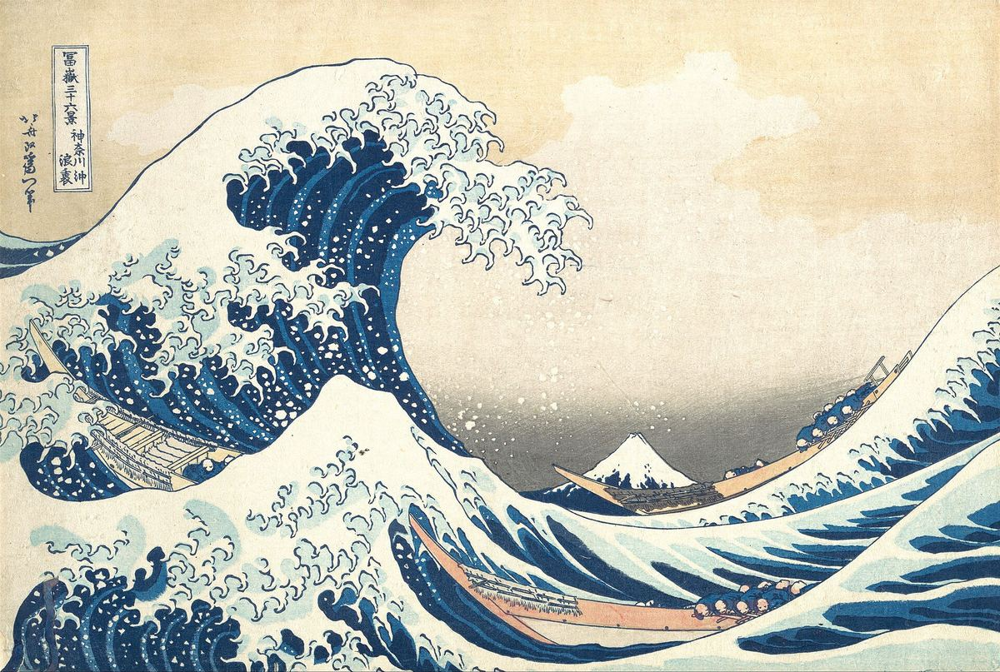

The Great Wave off Kanagawa

Palette
- Eggshell · your word: Ecru
- Dutch white · your word: Beige
- Ash · your word: Ash
- Indigo dye · your word: Denim
- Grey · your word: Grey
- Slate · your word: Slate
A woodblock print, so its blue is ink on paper. The publisher advertised the series in 1831 as blue-printed pictures, a style made possible by newly cheap Prussian blue. The outlines mix Prussian blue with indigo, and blue was printed over blue to deepen the troughs. Indigo fades faster in light than Prussian blue, one reason surviving impressions differ. The cream of the foam is the bare paper.
Image
Wikimedia Commons · Public domain

Hex values are screen approximations. Every page lists its sources.